- 1. 本ドキュメントについて
- 2. UnityでのInputSystemについて
- 2.1. InputSystem詳細…←これはあとで書く
- 2.2. InputSystemでのゲームパッドの各名称についえ
- 3. InputSystemの定義について
- 3.1. DroneInputActions.inputactionsの変更方法
- 3.2. ビルド
- 4. ゲームパッドの追加について
- 5. ゲームパッドのAsset追加
- 5.1. Unity Assetの利用
- 5.2. Assetの利用
| 略語 | 用語 | 意味 |
|---|---|---|
| No | 日付 | 版数 | 変更種別 | 変更内容 |
|---|---|---|---|---|
| 1 | 2026/01/12 | 0.1 | 新規 | 新規作成 |
1. 本ドキュメントについて
本ドキュメントは、Unityを使ったQuest3/3Sでのゲームパッドを利用できるようにするためのドキュメントとなります。
対象となるゲームパッドは、Xbox用のゲームパッドとなります。 UnityのVersionは、6.2を対象にしています。
2. UnityでのInputSystemについて
Unityのアプリケーションでは、InputSystemという入力をコントロールする機能が用意されています。このInputSystemを利用してゲームパッドがQuest3/3Sにて使えるようにできます。
2.1. InputSystem詳細…←これはあとで書く
2.2. InputSystemでのゲームパッドの各名称についえ
ゲームパッドは、左右スティック、各種ボタンがあります。これらの名称がInputSystem上で名称が決まっています。ゲームパッドを利用する場合には、InputSystem側の名称に合わせて、ゲームパッド側の左右スティック、各種ボタンを配置する必要があります。
- 表.各ゲームパッドとInputSystemの名称
| ゲームパッド名称 | Xboxでの名称 | PS4での名称 | Input System名称 |
|---|---|---|---|
| 下ボタン | A | × (Cross) | buttonSouth |
| 右ボタン | B | ○ (Circle) | buttonEast |
| 左ボタン | X | □ (Square) | buttonWest |
| 上ボタン | Y | △ (Triangle) | buttonNorth |
| 左バンパーボタン | LB (Bumper) | L1 | leftBumper |
| 右バンパーボタン | RB (Bumper) | R1 | rightBumper |
| 左トリガー | LT (Trigger) | L2 | leftTrigger |
| 右トリガー | RT (Trigger) | R2 | rightTrigger |
| 中央左ボタン | View (Back) | SHARE | select |
| 中央右ボタン | Menu (Start) | OPTIONS | start |
| 左スティック | Left Stick | 左スティック | leftStick |
| 右スティック | Right Stick | 右スティック | rightStick |
2.2.1. 例:Xboxゲームパッドの配置
Xboxのゲームパッドの場合は、以下のような名称になります。
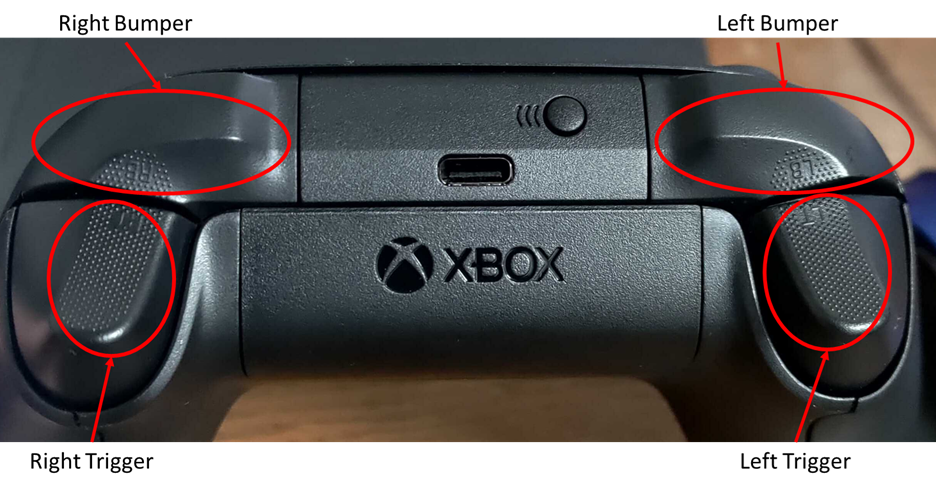
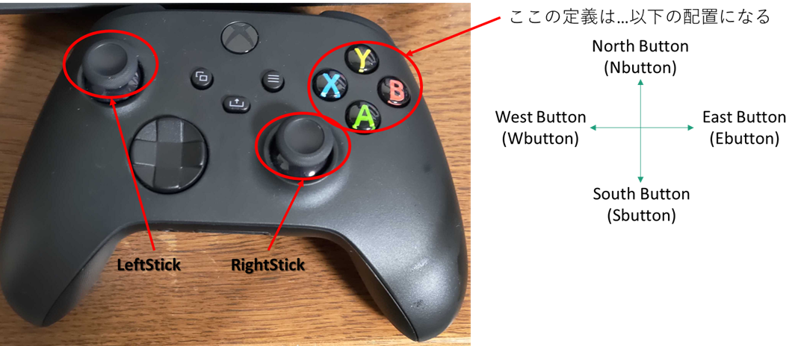
注意するのは、各ボタン配置になります。UnityのInputSystemでは、North Button、South Button、East Button、West Button、と東西南北の配置になっています。ボタン配置のときには各ボタン配置とUnityのInputSystemの名称に合わせて配置を行ってください。
3. InputSystemの定義について
箱庭ドローンシミュレータの場合は、InputSystemの定義が2つあります。1つはゲームパッド用の定義、もう一つはQuest3/3S標準のTouch Controller用の定義になります。
ゲームパッド用のInputSystemの定義は、テキストで定義されています。箱庭ドローンシミュレータの場合には、Assets/Scripts/Unity/InputにあるDroneInputActions.inputactionsが対象になります。
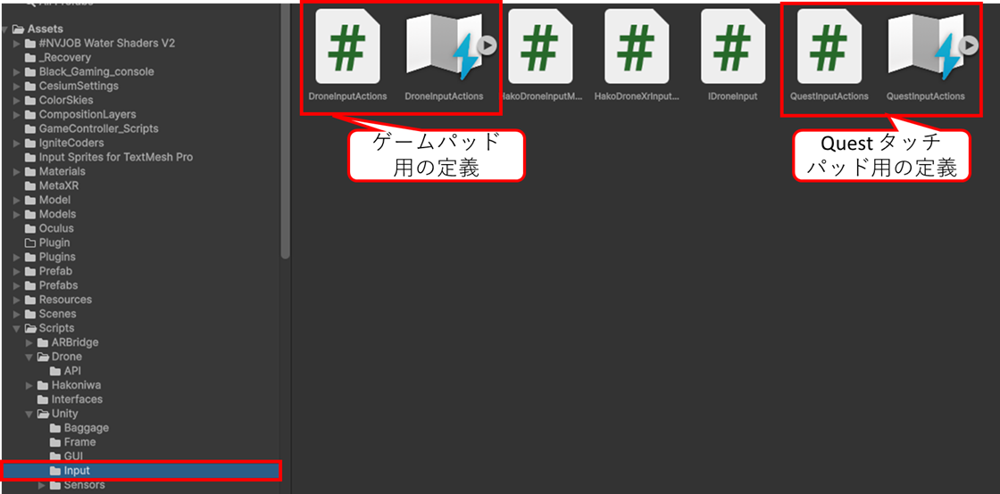
3.1. DroneInputActions.inputactionsの変更方法
Assets/Scripts/Unity/InputにあるDroneInputActions.inputactionsをクリックします。クリックすると各種定義の画面が表示されます。
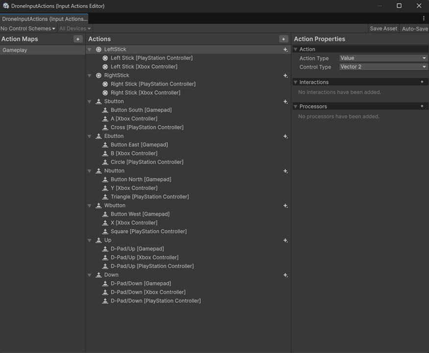
この画面を使ってゲームパッド用の定義をしていきます。
3.1.1. Xbox用定義の追加
ここからは、Xbox用の定義を追加していきます。画面中央のActionsに定義されている配置を選択して、ゲームパッド用の定義をしていきます。例として、UPの定義を変更していきます。
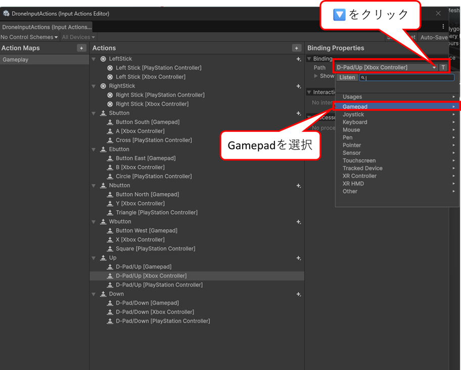
UPのD-PAD UP [Xbox Contoroller]をクリックします。クリックすると右側のBinding PropertiesのPathが選択できるようになるので、右側の🔽ボタンをクリックします。
🔽ボタンをクリックするとプルダウンメニューが表示されるのでGamepadを選択します。
Gamepadを選択すると各種スティック、ボタンの配置するプルダウンメニューが表示されるので、下にスクロールします。
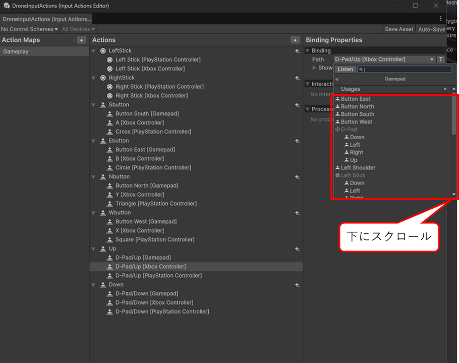
下の方にスクロールするとXboxゲームパッドが選択できるの選択します。
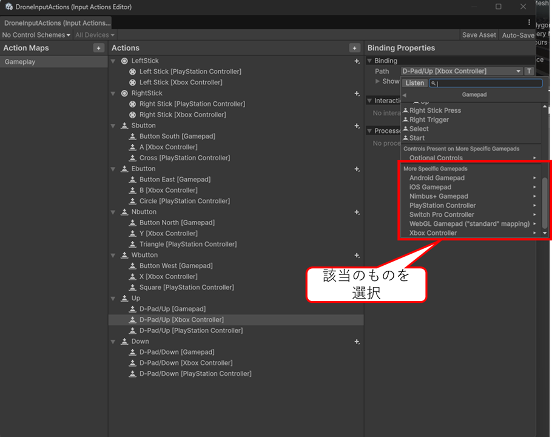
Xboxゲームパッドを選択すると各種スティック、ボタンの定義がプルダウンメニューで表示されるので、割り当てたいボタンをクリックして割り当てます。
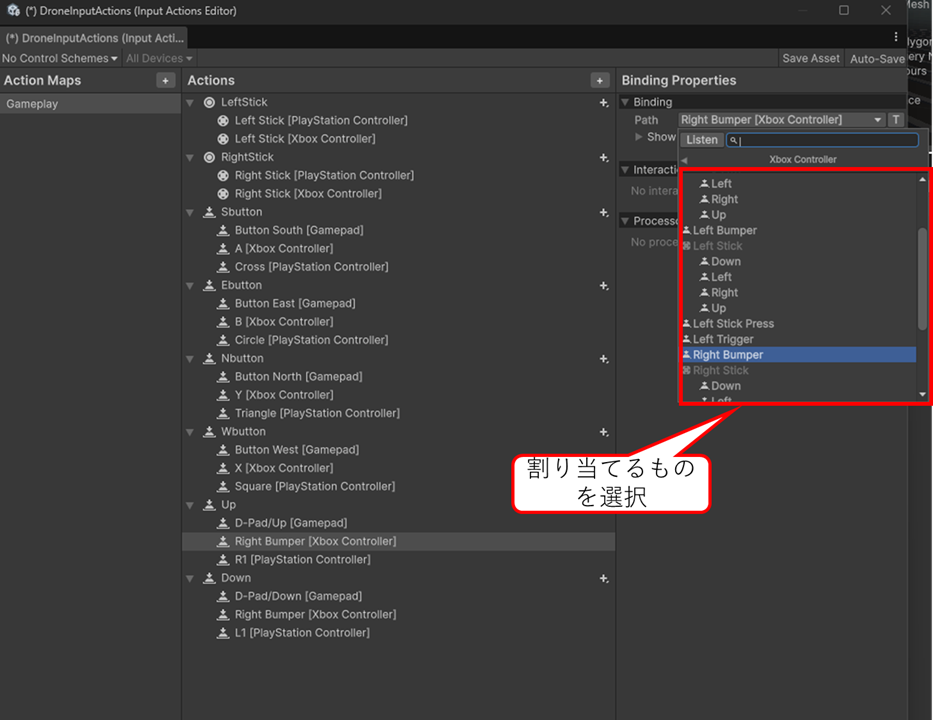
この作業を行うことでXboxゲームパッドの定義をすることができます。
3.2. ビルド
ゲームパッド用の定義が終了したら、Quest3/3S用のビルドを行います。実際にビルドする前にコンフィグ作業を行う必要があります。
3.2.1. ビルド前のコンフィグ作業
HierarchyのDJIAvatarを選択します。Inspecorを下にスクロールします。Drone Controlのスクリプトの位置にきたら、Input Typeをクリックします。Input TypeをクリックするとPS4、Xbox、Xrが選択できるので、該当のものを選択します。
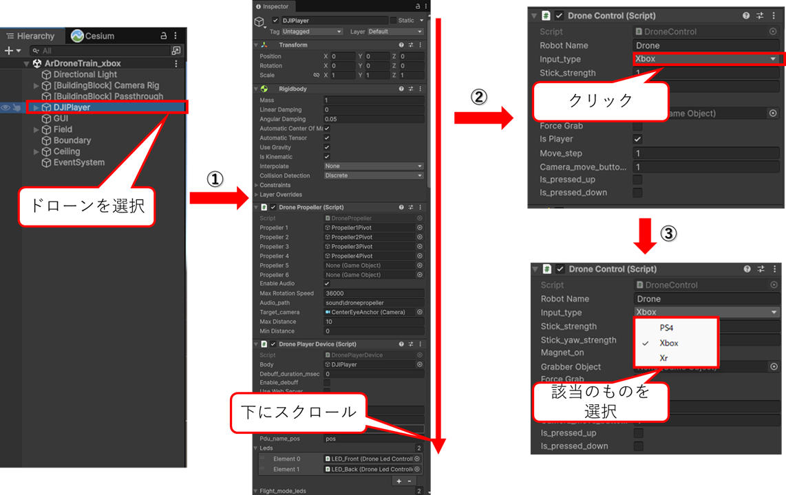
3.2.2. ビルド
Fileメニュー→Build Profileをクリックしてビルド画面を表示します。ビルドを実行する前にPlayer Settingsをクリックします。

Player Settingsの画面が開くので、Company Name、Product Name、Versionの部分を変更します。変更したら閉じてください。

Pleayer Settingの設定が終わったら、ビルドを実行します。
Unityのビルドの詳細については、hakoniwa-unity-droneのビルド編などを参考にしてください。
4. ゲームパッドの追加について
箱庭ドローンシミュレータでは、PS4、Xbox、Xrの3つのコントローラだけが定義されています。新たにゲームパッドの定義を使いする場合は、以下のソースコードを変更することが必要になります。
- Assets/Scripts/Drone/DroneControl.cs
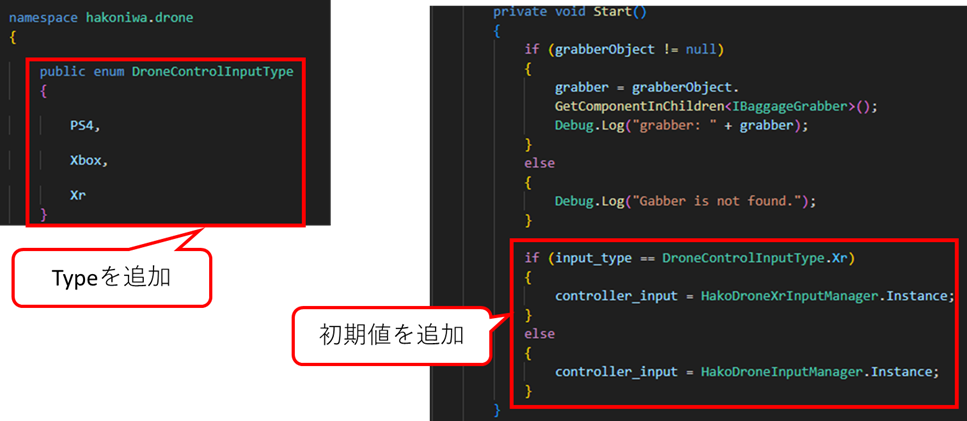
5. ゲームパッドのAsset追加
ここまでの対応で、Quest3/3Sでゲームパッドが使えるようになりました。ただ、ゲームコント―ラは、Quest3/3Sではバーチャル的には見えないため、バーチャルのゲームパッドを追加する方法をとなります。
5.1. Unity Assetの利用
AssetストアからFreeの素材を利用します。
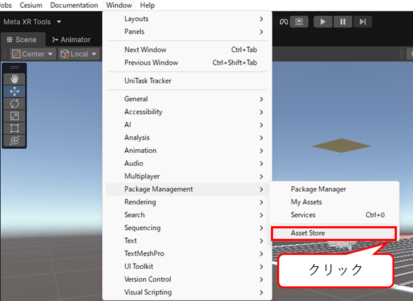
Windowメニュー→Package Management→Asset Storeをクリックします。ブラウザが立ち上がってくるので、Asset Storeを検索します。
Game Pad、Game Controllerなどで検索します。
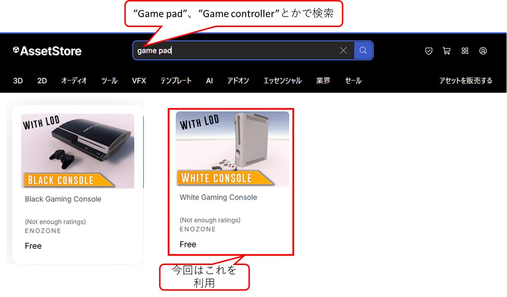
今回は、White Gaming Consoleを利用します。White Gaming Consoleをクリックして、My Assetに追加します。
5.2. Assetの利用
追加したWhite Gaming ConsoleをGameで利用します。右手でゲームコントローラを握ったときにバーチャルのゲームパッドが表示されるようにします。
Hierarchyの[BuildingBlock] Camera Rig→ TrackingSpace→RightHandAnchorにWhite Gaming ConsolePrefabを配置します。
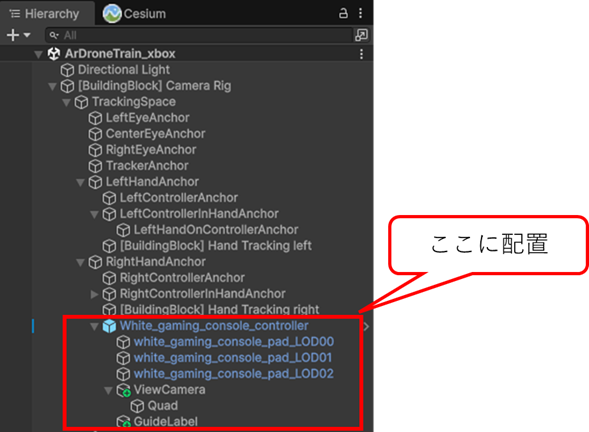
この位置に配置することで、Quest3/3Sのトラッキングカメラでの対象になります。
配置が完了したら、Inspectorにスクリプトを追加します。
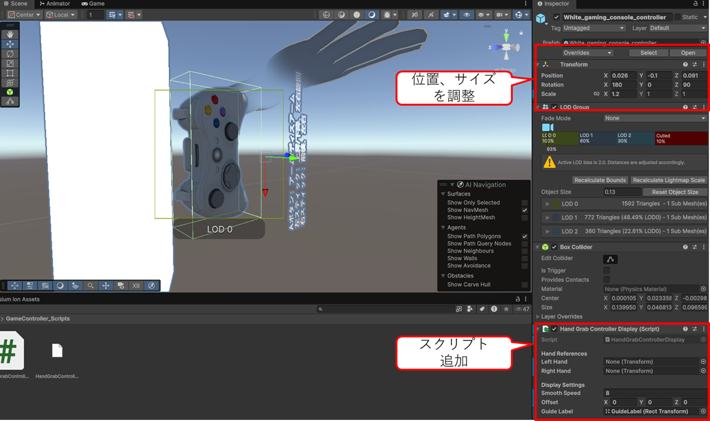
Assets/Scripts/GameController/Scriptsにある、HandGrabControllerDisplay.csを登録します。このスクリプトを追加することで、右手でゲームパッドを掴んだときにバーチャルゲームパッドが表示されます。詳細は割愛しますので、スクリプトを見てください。
White Gaming Consoleは追加すると位置があってないので、表示位置を良い感じに合わせるようにしてください。